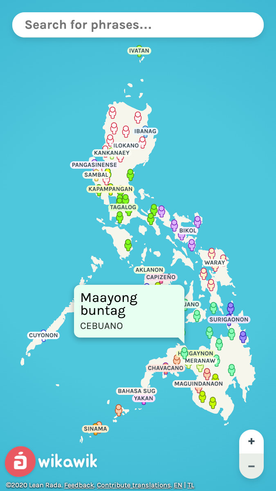
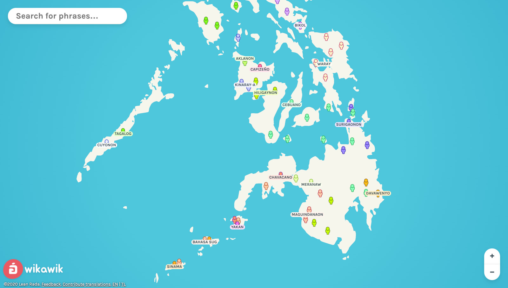

Wikawik

Language map of the Philippines
According to the diksiyonaryo: “wikawik” is a Filipino word, meaning madaldal or talkative.
Wikawik, on the other hand, is a webapp that showcases the various languages spoken in the Philippines.

There are over 100 languages spoken across the Philippine archipelago.
It’s amazing how diverse the language landscape of the Philippines is, yet it is rarely treasured or celebrated here in the Philippines.
In my grade school years, we celebrated Buwan ng Wika (Month of Language) every August, but they never taught us about all the other languages in the Philippines. It was only ever about Tagalog, the official national language and the language of the capital city.
Now that I’m older, I got a better understanding of the languages in the Philippines. Linguistics has also become a fascination for me, especially when it relates to Austronesian languages, the larger language family under which Philippine languages are grouped.
Did you know that many Filipinos are trilingual? They can speak at least three languages: Tagalog, English, and then their local language (e.g., Cebuano, Ilocano).
Anyway, I digress. Back to the Wikawik project.
This project has been on my list of project ideas for a while now. It was only in 2020 mid-quarantine August that the project gained traction, just in time for Buwan ng Wika.
The main idea behind the project was that it would be a phrase book in map form. Instead of the usual map visualization with color-coded regions, there would be phrases shown in local tongues spoken throughout the country.

The phrases would be translations of everyday words and phrases, such as “good morning” and “good evening”.
I also had an idea of having audio recordings of native speakers saying each of the phrases, because not all languages are pronounced the same. However, it wasn’t really feasible for me to do so.
Without audio resources, I had to settle on plain text phrases, lacking any pronunciation information.
The text phrases are displayed via speech bubbles that pop up from the little person markers scattered throughout the map.

The distribution of these markers are based on actual language distribution as per census data.
Clicking on a marker will conjure an information panel containing details about the selected language.

The information panel contains statistics about the language and the locality in which the selected language is spoken.
It also contains info scraped from Wikipedia and the Atlas Filipinas from the Komisyon sa Wikang Filipino (KWF).

Language endangerment data was obtained from the KWF Atlas as well, though I doubt the accuracy and up-to-dateness of some entries.
My favorite part was the Related Media section that features some pieces of music and videos sung or spoken in the local language.

I curated these media by hand and I really enjoyed discovering all these music sung in different Philippine languages.
The visualization was implemented using D3.js. I also used the MobX library to coordinate the whole app. Some smaller geo manipulation utilities helped along too.
In hindsight I should’ve used some UI framework and a compiler, because the main script reached about 2000 lines! This has been a great reminder of the state of the vanilla web; without Webpack and without Typescript.
Early test of marker entrance animationThe research needed for the app was probably the most time-consuming thing I did for this project. For comparison, I finished implementing the main visualization interface in one week. The data cleanup and research took about a month.
The data was primarily based on the Philippine Statistics Authority’s 2010 Census. The census surveyed, among other things, the main languages spoken at home in sampled households across the country.
But it got a little messy. There were inconsistencies throughout the data. Even the PSA and the KWF don’t agree on which are dialects and which are languages.
For example, look into Thinking Machine’s story about The language landscape of the Philippines. That visualization was based on raw PSA data.
One example issue with raw PSA data is, you won’t find the Rinconada language in there. PSA classified this language and other Bicol languages as one “Bikol/Bicol”. On the contrary, KWF classifies these non-mutually-intelligible languages separately.
There were many such cases of mismatch and misrepresentation in PSA data, which is sad.
That’s why a combination of other sources were used to supplement or correct this data, like the KWF Atlas, Ethnologue, Glottolog, and more.
The app loader is an animation of the logo morphing between the letters wi and ka in stylized Baybayin.Related to that were the translated phrases themselves. The phrases were the hardest to research!
Usually, meta information about a small language are readily available on the Internet, but what I needed were vocabularies or phrase books for the language. These resources are often non-existent, especially for dying languages that only had a handful of native speakers left.
I ended up going through Internet listicles, language tutorials, chatter in public Facebook groups of tribespeople, bilingual dictionaries, and translated Bibles.
I’ve stalked Facebook posts and Facebook groups. Facebook is so prevalent in the Philippines that it was a decent source of phrases in local languages. Context clues include the time of posting of certain greetings or phrases, emojis included in the post, etc. The spelling wasn’t as reliable though. Most Filipinos online write in txtspeak.
I’ve also listened to spoken Bibles in different indigenous languages. Missionaries make these Bibles for indigenous people in their hopes of saving indigenous peoples from their “paganism”. Most of these Bibles have no text versions available, just spoken verses. Comparing the translated Bible with the Tagalog and English Bibles side-by-side helped with certain words and phrases.
In the end, I got up to 82 translations. And that is for a single phrase only – the default “good morning”. For other phrases, such as “good evening”, not so much.
The project was released on Aug 2, just in time for Buwan ng Wika.
It was a fun and educational project. It made me appreciate the Philippine languages more and understand the linguistic oppression and pressure applied by the imposed national languages.
If you look at the map, only a relatively small population have Tagalog as their primary language, compared to the other major languages. In most of the other regions, it’s usually either Ilocano or Cebuano as the lingua franca. Yet, the official national language was chosen to be Tagalog. Why not teach both? Why not all three? We would all be multilingual then.
Even then, Tagalog is gradually being usurped by English in some areas! (See Taglish)
You may have heard of China imposing Mandarin on Tibetan schools. The situation sounds similar, albeit without the whole invasion thingy. This is how a language dies. It starts with the children. When they stop learning and speaking the language, they stop passing it down to their children, and the language dies.
The good news is that Philippines recently introduced the mother tongue-based education policy, but it sounded like the implementation faced some challenges. Then again, there have been motions to revert back to English as medium of instruction in education. ü§∑‚Äç‚ôÇÔ∏è
I hope we all embrace our differences and celebrate our diversity, is all what I’m saying.
Here’s a link to the webapp. Salamat sa pagbisita!